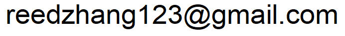

Hi. I'm Reed, currently a Master's student in Statistics at the University of Washington in Seattle.
I completed my undergrad in Statistics and Machine Learning at Carnegie Mellon University.
Feel free to take a look at some of the things I've done.
I program mainly in python (5+ years) and R (3+ years). I've also dabbled in web app dev and Tensorflow, among other topics.
In my spare time, I enjoy reading, listening to classical music, and petting dogs.
Contact
Email: 
Work/Internships/Research: I'm looking for something interesting to work next summer (2020)! Feel free to E-mail me.
Ingredient Associator
I often wonder why certain ingredients are so good together (like chocolate + nuts) and whether there are flavor profiles we simply haven't tried yet. To discover interesting combinations for myself, I downloaded and cleaned a dataset of 20,052 recipes, looking for subsets of ingredients that appeared together more frequently than we might expect.
This task should remind us of Association Rule Learning, which is actually what I had initially planned to do. However, it's possible to learn rules going in one direction (like {A, B} -> {C, D}) but not the other (like {C, D} -/> {A, B}), which wouldn't make sense in the context of flavor profiles. Therefore, I defined my task to be finding important subsets of ingredients (like {A, B, C, D}) without worrying about directional association. I scored each subset based on:
i. the observed number of appearances in our dataset, and
ii. the expected number of appearances under the assumption that ingredients are used independently of each other.
I modified the Apriori algorithm (normally used to learn association rules) to look for high-scoring subsets of ingredients. My code can be found here.
You can see a few example combinations below, listed in increasing order of unnexpectedness:
{mayonnaise, tuna} - Not surprising, but it serves as a sanity check that things are working correctly.
{chicken, celery, carrot} - Again, not surprised to see these together.
{blueberry, lemon} - Not sure I've ever tried this one, but it definitely sounds good.
{chocolate, almond, orange} - What is orange doing here? It has to be some sort of filling/frosting for a pastry right? I'm not completely sold on this one, but I still want to try it someday.
I worked on text classfication systems at a Question.ai, a SF startup. This mostly involved scraping data and making sure it's quality was OK. For that, I used Scrapy. Initially, I spent a lot of time training neural nets in Tensorflow, which didn't do too great. I later moved on to try Fasttext, a methodology published by Facebook Research in 2016. It gave much better results, and it was fast, so we pushed the model onto the demo server.
Carnegie Mellon University - Tartan Data Science Cup (TDSC)
The TDSC was a kaggle-like analytics competition. On top of the usual predictions, however, we also had to write reports and give presentations. (Read about the competition here.)
Our goal was to predict the likelihood that any given customer would purchase eggs in the following week, given their spending habits and household information. Predictions took the form of probabilities, evaluated via Brier Score.
When I explored the data, I noticed that the customers fit into two distinct groups, one for which household data was not present, and another for which household data was present. (Call them Group1 and Group2 respectively.) This was important because Group2 purchased eggs far more often than Group1. (Perhaps they held some sort of grocery rewards card that incentivized them to shop more often. Card holders would have to give household information to get the card, explaining why certain pieces of data were only available for Group2.)
Because time was limited, I didn't have time to test different models. I chose to go with RandomForests (yay for not having to do feature selection). I did some parameter-tuning with the caret library in R for each group and ended up with predictions good enough to earn me a finalist's spot.
I only had 6 hours from start to finish, so a lot of my code was messy.
I spent some free time looking through a few Kaggle datasets. I stuck with bioinformatics-related data since that's what I was most comfortable with at the time. Kaggle really is a gold mine when it comes to their publicly-available datasets.